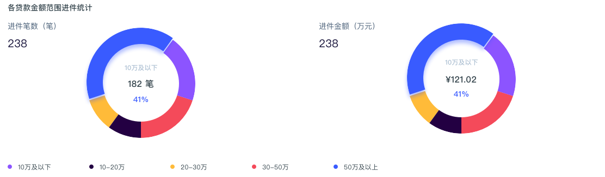

夏天的杭州是真的热，而且还是闷热，夹杂着雷雨天，别提有多糟糕了，我还是适合待在空调房里。
《CSS世界》 => 完成
我CSS似乎暂时写不出什么，看书去吧……
也好久没有做一些总结了，截止上篇博客至今，分享一些我的心得。
内部数据分析系统开发接触ECharts
采用Vue构建页面，那么我就选用了v-charts来写项目。
比较有意思的是，我基本没有看v-charts的文档，而是一直在查ECharts的文档。
因为v-charts基于ECharts，所以我需要通过ECharts的文档查阅API以及配置项。
开发过程并无亮点，需要提一个我没有解决的问题。
项目需求是生成饼图后将一块区域高亮显示。

那么能够设置action.highlight实现此功能，并且通过events.mouseover来控制highlight/downplay，但是遇到的问题是，如果用户没有直接触摸到饼图区域而是先触摸图例区域，那么会导致高亮区域重叠……，可是文档中并没有暴露图例相关的鼠标事件……，所以这个问题就先放着吧。
关于微信安卓客户端采用QQ浏览器X5内核的机型上遇到的坑
背景
项目本身涉及到微信用户静默授权登录，那么采用先访问项目地址，通过URL判断调起接口跳转至微信域名，再从微信域名跳回至项目地址实现获取用户相关参数，实现静默授权。
发现问题
项目提交给测试后发现奇怪的问题，发现部分安卓机型打开项目直接白屏，当时我就惊呆了。
寻找问题
通过在项目中加入vConsole插件去debugger项目逻辑，以及使用spy-debugger代理去抓取项目的资源请求逻辑，查询并不是代码逻辑的问题。思路无问题，也发现这一现象只会出现在QQ浏览器X5内核的机型上，这是就认准了，是该内核兼容性导致项目出现此问题的。但是并不能让客户去操作浏览器内核切换，毕竟项目是对C的。好的，先把问题放一放，虽然这个时候真的很恨这个内核，但是其他问题也得解决。周末静下心来以后，重写试着debugger这个项目发现，其实是在这类内核上，URL的hash值变化并不会导致页面reload操作。
这时候便有了解决的代码：
window.addEventListener('hashchange', e => {
location.reload()
})但是项目采用的路由跳转模式也是hash模式，所以这段代码是需要优化一下的：
// utils.js
// 封装一个用于识别QQ浏览器的方法
export const isQQBrowser = () => {
const UA = window.navigator.userAgent.toLowerCase()
// || [] 是用于解决当正则表达式匹配结果为null值时，前面的解构报错问题
const [UAString] = UA.match(/qqbrowser/i) || []
if (UAString === 'qqbrowser') {
return true
}
return false
}// 只对QQ浏览器添加监听
if (isQQBrowser()) {
window.addEventListener('hashchange', e => {
const { oldURL, newURL } = e
const compare = newURL.split(oldURL)
// 满足页面追加参数时reload，而非跳转页面时reload
if (compare.length > 1) {
location.reload()
}
})
}题外话
因为项目背景的原因，目前微信浏览器下方会有个返回按钮，用户可以点击返回按钮返回至公众号菜单配置的地址，也就是静默授权跳转前的地址，没有错，那个页面也是白屏页面，为了避免这种现象，依据项目的逻辑，对两种现象进行判断，并采用关闭微信浏览器来提升用户体验。
router.beforeEach((to, from, next) => {
const { name, fullPath, query } = to
// not have query close
if (name === null && fullPath === '/') {
return wx.closeWindow()
}
// just have wechatJumpMenu query close
const Query = Object.entries(query)
if (name === null && Query.length === 1 && query.wechatJumpMenu !== 'undefined') {
return wx.closeWindow()
}
next()
})移动端浏览器隐私模式/无痕模式使用本地存储localStorage/sessionStorage的问题
开发H5 webapp时经常需要使用本地存储，如localStorage和sessionStorage存储一些数据，相比最多能存4k的cookie相比，用起来很好用。但是localStorage在iOS Safari、chrome和UC浏览器中的隐私模式（也叫无痕模式）下无法使用，手机Safari浏览器中具体表现是：
localStorage对象仍然存在- 但是
setItem会报异常：QuotaExceededError getItem和removeItem直接忽略
禁止数组中含有重复值找Set
在数组中查找重复值，可以直接使用Set去重，然后比较长度即可。
// 比较重复值仅限Number/String类型
const list = [...]
const listSet = new Set(list)
console.log('是否含有重复值：', list.length !== [...listSet].length)初试node.js
之前试着用express写过一个接口，现在准备从头慢慢的学习node.js，还没有看书读《深入浅出node.js》，先阅读了一些在线资料，可以很清楚的感受到node.js无处不在，最明显的感受就是前端构建工具，从之前的Gulp到现在的Webpack，其他的应用场景可以参阅下面的文章。
分享一些库
- 本文链接: https://zongzi531.com/2018/07/04/2018-%E5%A4%8F%E5%A4%A9/
- 版权声明: 本博客所有文章除特别声明外，均采用 CC BY-NC-SA 3.0 许可协议。转载请注明出处！